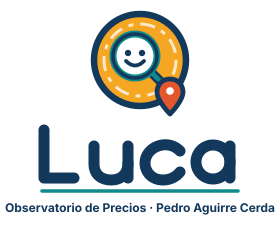
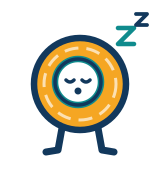

1. Versiones del logotipo
El símbolo combina una moneda ámbar (ahorro familiar), una lupa turquesa sonriente (comparación clara y cercana) y un pin coral (comercio local de la comuna). No utiliza el escudo ni el logotipo oficial de la Municipalidad.
Horizontal principal

Vertical
Símbolo solo
Monocromo (#12385C)
Blanco sobre #0F2F4D (contraste 13.9:1)
2. Paleta cromática y contraste WCAG 2.1 AA
Todas las combinaciones de texto normal garantizan un contraste igual o superior a 4,5:1.
Marino 900
#0F2F4D · 13.9:1 vs blanco
#0F2F4D · 13.9:1 vs blanco
Marino 700
#12385C · 11.8:1 vs blanco
#12385C · 11.8:1 vs blanco
Turquesa 700
#0B6E70 · 5.9:1 vs blanco
#0B6E70 · 5.9:1 vs blanco
Ámbar 400
#F5A623 · 7.1:1 con #0F2F4D
#F5A623 · 7.1:1 con #0F2F4D
Coral 600 (Ofertas)
#C8401C · 5.4:1 vs blanco
#C8401C · 5.4:1 vs blanco
Verde 700 (Bajó)
#187540 · 5.6:1 vs blanco
#187540 · 5.6:1 vs blanco
Rojo 600 (Subió/Error)
#C62828 · 5.6:1 vs blanco
#C62828 · 5.6:1 vs blanco
Crema 50 (Fondo)
#FFFBF2 · 14.4:1 con #1F2933
#FFFBF2 · 14.4:1 con #1F2933
3. Tipografía, área de respeto y tamaños mínimos
- Títulos: Nunito (pesos 700, 800, 900) — formas redondeadas, cercanas y claras.
- Texto general: Atkinson Hyperlegible (mínimo 18 px, interlineado 1,6) — diseñada para máxima legibilidad en personas mayores y baja visión.
- Área de respeto: mantener al menos el 25 % de la altura del símbolo libre alrededor del logotipo.
- Tamaños mínimos verificados:
16 × 16 px (favicon simplificado)
32 × 32 px (barra del navegador)
64 × 64 px (encabezado móvil)
4. Mascota "Lucas" (4 poses)
Se utiliza en estados vacíos, mensajes de éxito, páginas de error (404/403/500) y avisos de pausa.
Saludando (bienvenida)
Pulgar arriba (éxito)
Buscando (sin resultados)

Dormido (mantenimiento)5. Usos correctos e incorrectos
✔ Correcto
- Usar versión blanca sobre fondos azul marino (#0F2F4D / #12385C).
- Mantener proporciones originales sin estirar ni deformar.
- Acompañar siempre al símbolo con texto accesible (
alt).
✘ Incorrecto
- Reemplazar el símbolo por escudos oficiales de la Municipalidad o monedas reales.
- Colocar texto ámbar claro directamente sobre fondo blanco.
- Agregar sombras 3D, degradados complejos o rotaciones al logotipo.